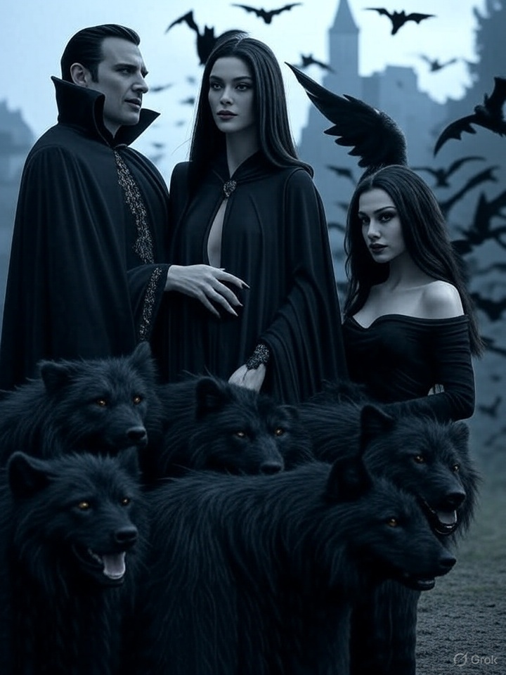
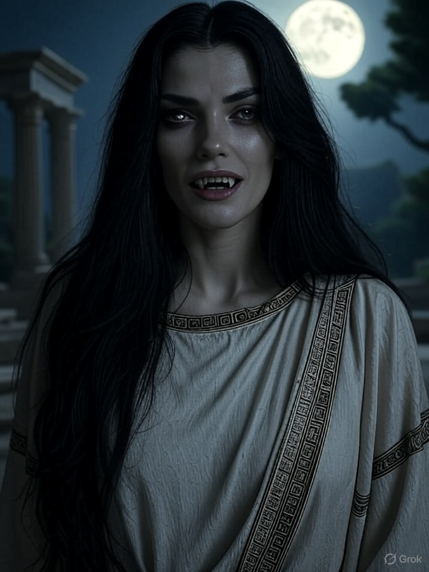
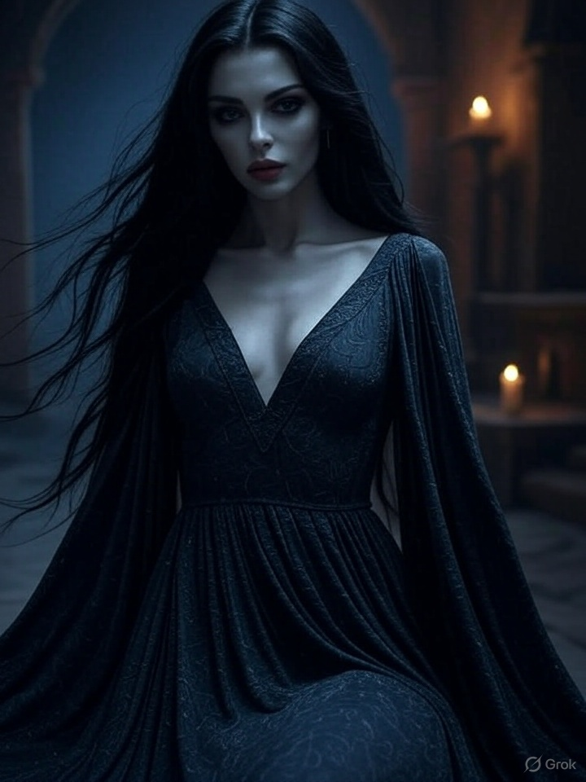
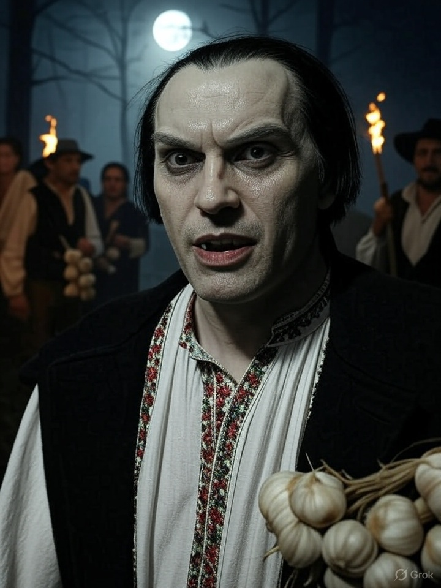
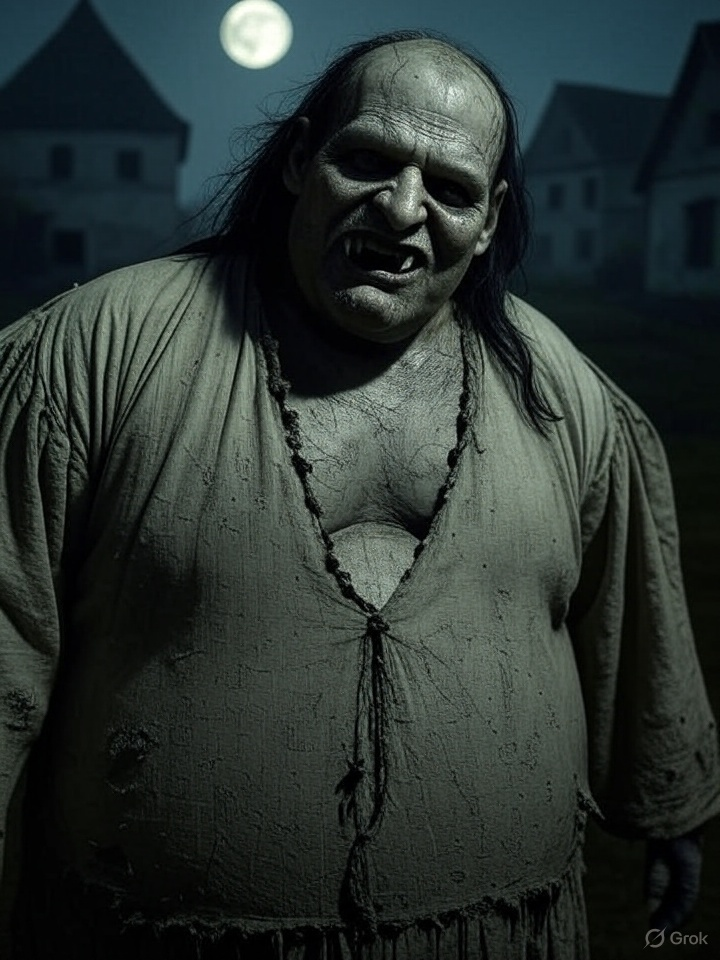

Un recorrido por las primeras figuras y relatos de muertos vivientes.
El Origen del Mito Vampírico

Hermandad de vampiros bajo la luna, con lobos negros y murciélagos,
evocando mitos y poder atemporal.
El mito del vampiro tiene orígenes multiculturales, ligado al temor a
la muerte y lo sobrenatural. En Mesopotamia, los
"lamashtu", demonios que atacaban a los vivos,
marcaron un precedente. En la mitología griega,
Lamia, una figura que devoraba sangre o niños,
contribuyó al imaginario. En el judaísmo, Lilith,
descrita en textos antiguos como un demonio nocturno que seducía y
mataba, añadió elementos al mito.
En la Europa medieval, el folclore eslavo de los Balcanes hablaba de
"strigoi" o "vrykolakas", muertos
que regresaban para alimentarse de sangre, influenciados por epidemias
y entierros prematuros.
En el siglo XVIII, casos como el de Arnold Paole en
Serbia avivaron el interés europeo, con informes y tratados que
analizaban el vampirismo. La literatura del siglo XIX consolidó el
arquetipo moderno con "Carmilla" (1872) de Sheridan
Le Fanu y "Drácula" (1897) de Bram Stoker, que
mezclaron gótico, cristianismo y ansiedades sobre sexualidad y el
"otro".
En el siglo XX, el cine y la televisión transformaron al vampiro en un
ícono pop, desde los monstruos de
"Drácula" (1931) de Universal Pictures hasta los
antihéroes de "Entrevista con el vampiro" (1976) de
Anne Rice y "Crepúsculo" (2005) de Stephenie Meyer.
Hoy, el vampiro refleja preocupaciones modernas como la inmortalidad y
la alienación, manteniendo su relevancia cultural.
Lamia

Ejemplo: Pintura de la Lamia, criatura mítica de Grecia.
Lamia, en la mitología griega, fue
una reina de Libia que mantuvo un romance con
Zeus y tuvo varios hijos.
Hera, esposa de Zeus, al descubrir el affair,
mató o secuestró a los hijos de Lamia. El
dolor la volvió loca, y comenzó a
devorar a los hijos de otras personas.
Transformada por la tragedia, Lamia fue maldita con
insomnio eterno, incapaz de cerrar los ojos. Su
cuerpo adquirió rasgos serpentinos: mitad mujer,
mitad criatura nocturna.
Zeus, en un gesto de piedad, le otorgó el don de la
profecía y la capacidad de
remover y reinsertar sus ojos.
En tradiciones posteriores, Lamia se asocia con el
vampirismo: una seductora que atraía
a jóvenes para alimentarse de su carne y sangre. En
textos como La vida de Apolonio de Tiana y
El asno de oro, aparece como
bruja que drena sangre, influenciando
mitos vampíricos posteriores.
Lilith

Ejemplo: Ilustración de Lilith, figura del folklore judío.
Lilith, en la tradición judía, es
una figura mitológica que aparece por primera vez en textos como el
Alfabeto de Ben Sira (siglo VIII–X). Se la describe como la
primera esposa de Adán, creada simultáneamente con él
a partir del polvo, a diferencia de Eva.
Debido a su negativa a someterse a Adán, Lilith
abandonó el Edén, desafiando la voluntad divina. Como
castigo, fue transformada en un
demonio nocturno.
En el folclore judío, se la asocia con la
seducción y el daño a los hombres,
especialmente a los recién nacidos, a quienes atacaba
para robarles su vitalidad.
Su conexión con el vampirismo surge en tradiciones
posteriores, particularmente en la
demonología medieval y el
folclore europeo. Lilith es descrita como una
succubus que seduce a hombres durante el sueño para
engendrar criaturas demoníacas o
alimentarse de su energía vital.
Textos cabalísticos como el Zohar la presentan como una
entidad nocturna que reina sobre
espíritus malignos y
criaturas de la noche, reforzando su imagen como un
ser sobrenatural que drena vida.
Esta asociación se amplificó en la literatura y el
ocultismo, donde Lilith se convirtió en un
arquetipo de la femme fatale sobrenatural, influyendo
en representaciones de vampiros y
demonios femeninos en la cultura popular.
Otros Muertos Vivientes Antiguos
Strigoi (Folclore Rumano)

Ejemplo: Fotografía de un ídolo rumano que se asemeja a un
strigoi.
El Strigoi, en el folclore rumano,
es una criatura sobrenatural similar a un
vampiro, asociada con los
muertos que regresan para alimentarse de la vida de
los vivos.
Puede ser un espíritu maligno o un
cadáver reanimado, a menudo transformado por una
muerte violenta,
prácticas de brujería o
nacimientos bajo signos astrológicos (como el
martes o viernes).
Sus características incluyen palidez,
fuerza sobrehumana,
transformación en animales (como perros o
murciélagos), y un
deseo de beber sangre o energía vital.
Se cree que ataca a familiares o
aldeanos, y se les combate con métodos como
estacas, ajo o
incineración del cuerpo.
Upir (Mitología Eslava)

Ejemplo: Grabado de un upir eslavo.
El Upir, también conocido como
Upiór, es una
criatura vampírica del
folclore eslavo, especialmente en regiones como
Polonia y Rusia.
Se considera un muerto no enterrado adecuadamente o
alguien que vivió de manera impía, regresando como
un ser maligno para alimentarse de la
sangre o energía vital de los
vivos.
A diferencia de los vampiros clásicos, el Upir no
siempre tiene colmillos prominentes y puede parecer
un cadáver hinchado o descompuesto.
Se le atribuyen poderes como
transformarse en animales (lobo, murciélago) y
causar enfermedades.
Su rol en el mito vampírico eslavo lo convierte en
una figura de terror rural, combatida con métodos
como decapitación, cremación o el
uso de objetos religiosos.